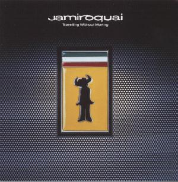

Music
Virtual Insanity by Jamiroquai
Click to listen to a real audio excerpt from Virtual Insanity (30 sec.).
(This requires a real audio player)

Lyrics:
Oh yeah, what we're living in (let me tell ya)
It's a wonder man can eat at all
When things are big that should be small
Who can tell what magic spells we'll be doing for us
And I'm giving all my love to this world
Only to be told
I can't see
I can't breathe
No more will we be
And nothing's going to change the way we live
Cos' we can always take but never give
And now that things are changing for the worse,
See, its a crazy world we're living in
And I just can't see that half of us immersed in sin
Is all we have to give these -
Futures made of virtual insanity now
Always seem to, be govern'd by this love we have
For useless, twisting, our new technology
Oh, now there is no sound - for we all live underground
And I'm thinking what a mess we're in
Hard to know where to begin
If I could slip the sickly ties that earthly man has made
And now every mother, can choose the colour
Of her child
That's not nature's way
Well that's what they said yesterday
There's nothing left to do but pray
I think it's time I found a new religion
Waoh - it's so insane
To synthesize another strain
There's something in these
Futures that we have to be told.
Futures made of virtual insanity - now
Always seem to, be govern'd by this love we have
For useless, twisting, our new technology
Oh, now there is no sound - for we all live underground
Now there is no sound If we all live underground
And now it's virtual insanity
Forget your virtual reality
Oh, there's nothing so bad.
I know yeah
Of this virtual insanity, we're livin in.
Has got to change, yeah
Things, will never be the same.
And I can't go on
While we're livin' in oh, oh virtual insanity
Oh, this world, has got to change
Cos I just, I just can't keep going on, it was virtual.
Virtual insanity that we're livin' in, that we're livin' in
That virtual insanity is what it is
Futures made of virtual insanity - now
Always seem to, be govern'd by this love we have
For useless, twisting, our new technology
Oh, now there is no sound - for we all live underground
Living - Virtual Insanity
Living - Virtual Insanity
Living - Virtual Insanity
Living - Virtual Insanity
Virtual Insanity is what we're living in